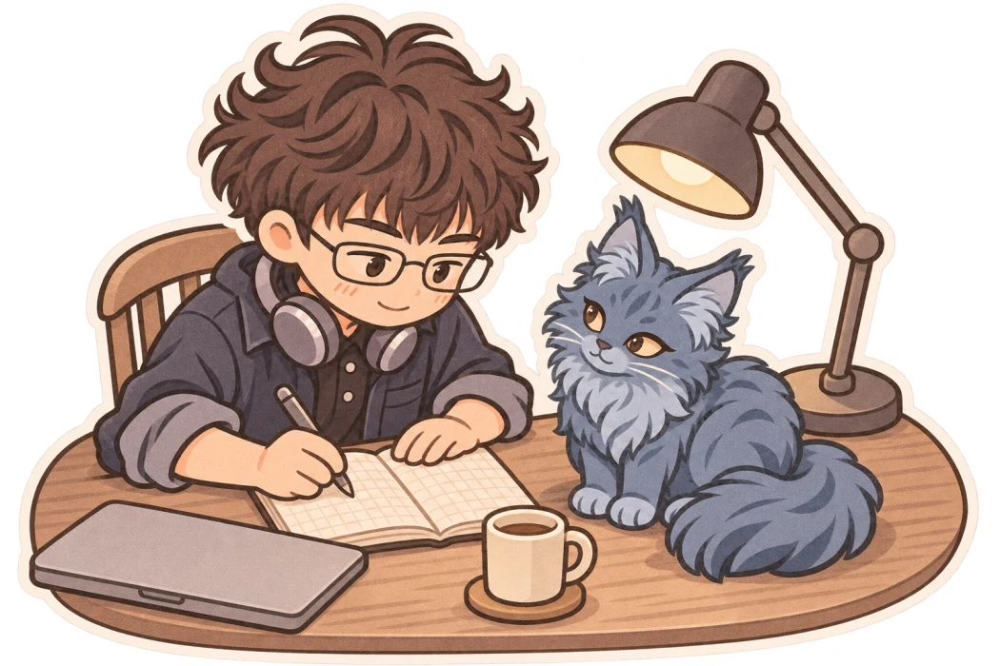

关于我
你好，我是 Jacky
我喜欢从手头的问题出发，做一个自己愿意天天用的小工具。做完以后，再用一个具体例子，把为什么这么做、怎样看出它有效讲明白。
最近做的事情大多围绕 AI 协作、网页交互和设计方法。比如把网页评注意见连同位置交给 AI，或者在离开电脑时，用手机继续手头的会话。

你好，我是 Jacky
我喜欢从手头的问题出发，做一个自己愿意天天用的小工具。做完以后，再用一个具体例子，把为什么这么做、怎样看出它有效讲明白。
最近做的事情大多围绕 AI 协作、网页交互和设计方法。比如把网页评注意见连同位置交给 AI，或者在离开电脑时，用手机继续手头的会话。
